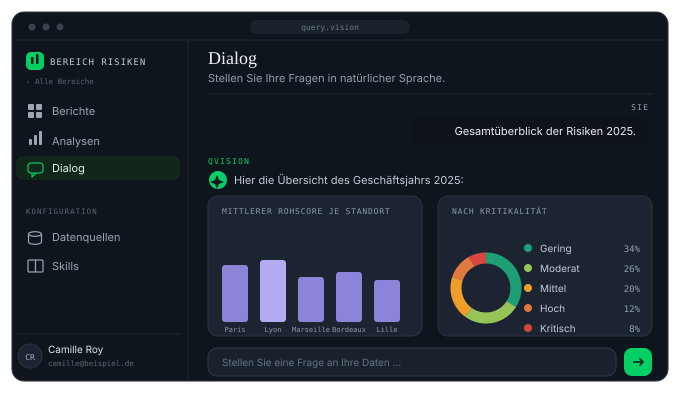
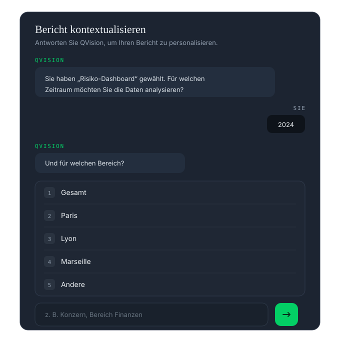
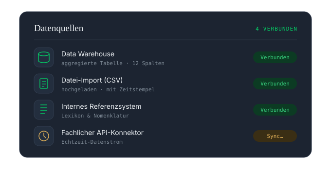

Query Vision verwandelt komplexe Daten in einfache Entscheidungen. Befragen Sie Ihre Zahlen in natürlicher Sprache und erhalten Sie sofort einen belegten, auditierbaren Bericht mit Zahlen. Ohne Tabellenkalkulation, ohne Ticket, ohne Wartezeit.
Was der Agent kann
Stellen Sie die Frage so, wie Sie sie aussprechen würden. Der Agent übersetzt, führt aus und begründet jeden Rechenschritt — die generierte Abfrage wird offengelegt, niemals versteckt.

Formulierter Insight, passende Visualisierung, Kernzahl im Fokus. Sie verstehen beim Lesen, nicht beim Interpretieren — und jeder Bericht kann kontextualisiert, versioniert und exportiert werden.

Kennzahlen, Dimensionen, Hierarchien: Query Vision spricht die Sprache Ihrer Abteilung, nicht die der technischen Tabellen — dank des Fachkorpus, das bei der Integration Ihrer Daten geladen wird.

Wie er arbeitet
Ihre Quellen, dort, wo sie liegen. Ohne Kopie außerhalb Ihrer Infrastruktur.
Fachliche Modellierung und Governance-Regeln, festgelegt bei der Integration.
In natürlicher Sprache, durch alle berechtigten Fachbereiche.
Die Analyse, nicht die Tabellenkalkulation. Sofort lesbar, belegt.
Verbreiten, exportieren, die Entscheidung automatisieren — API und MCP.
Rechte pro Rolle, Workspace und Produkt — Audit-Log für jede Abfrage — Ausführung vollständig in Ihrer dedizierten Infrastruktur, gehostet in Frankreich.
Nächster Schritt
Eine Demonstration auf einer Stichprobe Ihrer Daten, mit Ihrem Fachvokabular. Unverbindlich.